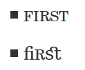
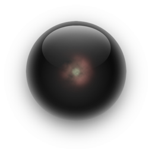
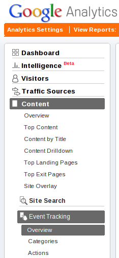
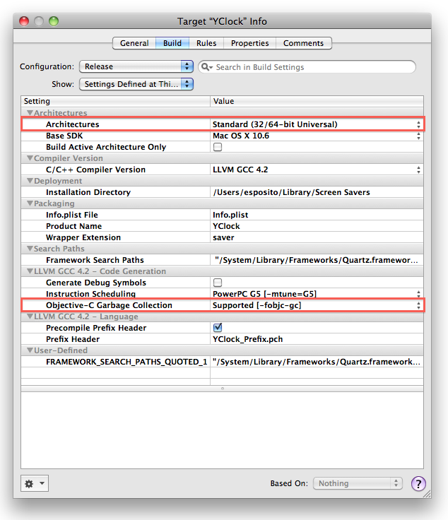
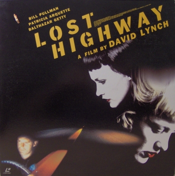

Blog
Popular Articles
Archive
- 2013-03-16 Hakyll setup
-
2013-03-14 Social link the right way

-
2012-12-12 Category Theory Presentation

-
2012-06-15 Haskell Progressive Example

-
2012-02-08 Learn Haskell Fast and Hard

-
2012-02-02 Typography and the Web
-
2012-01-15 Haskell web programming

- 2011-10-20 Increase the power of deficient languages.
-
2011-10-04 Yesod excellent ideas

-
2011-09-28 Programming Language Experience

-
2011-09-28 Higher order function in zsh

- 2011-08-25 Learn Vim Progressively
-
2011-08-17 A more convenient diff
- 2011-07-10 ASCII Haskell Mandelbrot
- 2011-05-18 40 character's passwords
- 2011-04-20 Now hosted on github
- 2011-01-03 Why I won't use CoffeeScript (sadly)
- 2011-01-01 Happy New Year
- 2010-10-26 LaTeX like macro for markdown
- 2010-10-14 Fun with wav
-
2010-10-10 Secure eMail on Mac in few steps

- 2010-10-06 New Blog Design Constraints
- 2010-09-02 base64 and sha1 on iPhone
- 2010-09-02 Use git to calculate trusted mtimes
- 2010-08-31 send mail from command line with attached file
- 2010-08-23 Now hosted by heroku
-
2010-08-11 Undecidabilities (part 1)

- 2010-07-31 New style after holidays
- 2010-07-07 Do not use CSS gradient with Chrome
- 2010-07-05 Cappuccino vs jQuery
- 2010-06-19 jQuery popup the easy way
-
2010-06-17 Track Events with Google Analytics
- 2010-06-17 Hide Yourself to your Analytics
- 2010-06-15 Get my blog engine
- 2010-06-14 multi language choices
- 2010-05-24 Trees; Pragmatism and Formalism
-
2010-05-19 How to repair a cutted XML?

- 2010-05-17 I live again!
-
2010-03-23 Encapsulate git

- 2010-03-22 Git Tips
- 2010-02-23 When regexp is not the best solution
- 2010-02-18 split a file by keyword
- 2010-02-16 Pragmatic Regular Expression Exclude (2)
- 2010-02-15 Pragmatic Regular Expression Exclude
- 2010-01-12 antialias font in Firefox under Ubuntu
- 2010-01-04 Change default shell on Mac OS X
- 2009-12-14 Git vs. Bzr
- 2009-12-06 iphone call filter
- 2009-11-12 Git for n00b
- 2009-10-30 How to handle evil IE
- 2009-10-28 custom website synchronisation with mobileme (2)
- 2009-10-26 Menu waiting to hide himself
- 2009-10-23 launch daemon from command line
- 2009-10-22 Focus > Minimalism
- 2009-10-13 Untaught Git usage
-
2009-10-03 How to preload your site with style

- 2009-09-28 Disqus versus Intense Debate (Why I switched)
- 2009-09-23 jQuery Tag Cloud
- 2009-09-22 replace all except some part
- 2009-09-17 Load Disqus Asynchronously
- 2009-09-11 Synchronize Custom WebSite with mobileMe
- 2009-09-11 Why I didn't keep whos.amung.us
- 2009-09-07 ssh to Listen 443 on Snow Leopard
-
2009-09-06 Screensaver compilation option for Snow Leopard©
- 2009-08-18 Git for self
- 2009-08-17 Git remote branch creation
- 2009-08-15 DRM are EVIL
-
2009-08-04 A try to demystify 'Lost Highway'
-
2009-08-04 A try to demystify 'Lost Highway'

- 2009-07-22 Better than Grep
- 2009-07-06 MVC explained
- 2008-10-10 Nanoc